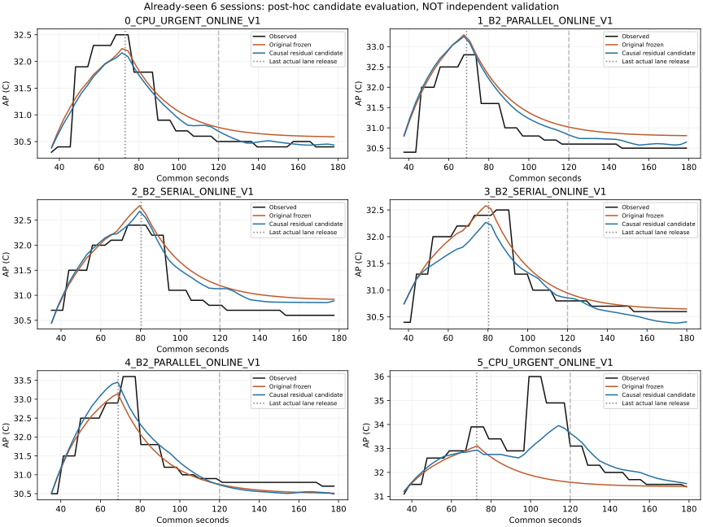
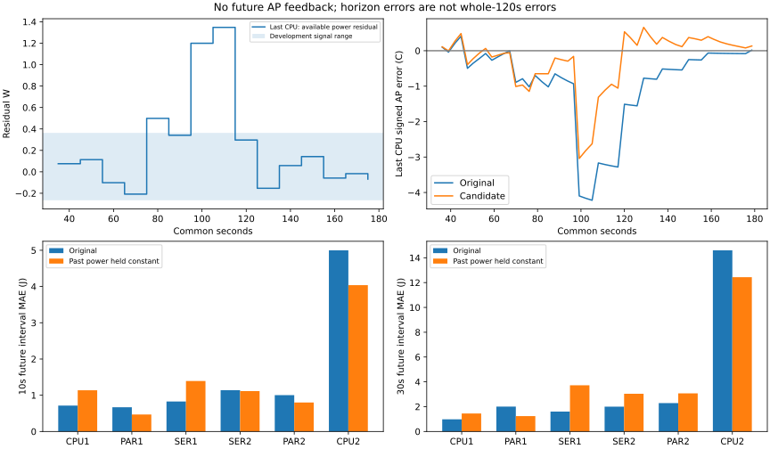

개발3만 적합 / 이미 본 확인6 평가 / 새 독립 확인0. AP 평균 오차 감소와 계수 안정성·정책 선택 적격성을 구분합니다. 전류 raw=mA 조건부, 절대 정확도 미인증. 실행 이후 AP 피드백 없음. 과거 전력만 사용한 10/30초 예측이며 전체120초의 사전 예측 개선으로 해석하지 않습니다. 기존 동결본·strict·experiment_ready=false 유지.
판정·필요 실측·재현 · 판독 수치 · 미래 구간 오차


| id | role | gamma | complete_candidate_path | frozen_mae_c | candidate_mae_c | frozen_max_c | candidate_max_c | frozen_peak_error_c | candidate_peak_error_c |
|---|---|---|---|---|---|---|---|---|---|
| development_0_CPU_URGENT_ONLINE_V1 | development | 0.12628721975973867 | True | 0.7029066412920238 | 0.6268073104674355 | 1.0984869935181223 | 1.1847952425235775 | 0.3281709295692181 | 0.18394035840741907 |
| development_0_B2_PARALLEL_ONLINE_V1 | development | 0.12628721975973867 | True | 0.4440202625032399 | 0.40599388396482067 | 1.6029745974892151 | 1.6607406760754486 | 0.30297459748921796 | 0.36074067607545146 |
| development_0_B2_SERIAL_ONLINE_V1 | development | 0.12628721975973867 | True | 0.22801888995556774 | 0.28896963783265894 | 1.5017287860032553 | 1.3547519325402462 | -0.9371149137303476 | -0.7354656529066688 |
| confirmation_0_CPU_URGENT_ONLINE_V1 | confirmation | 0.12628721975973867 | True | 0.27212847696694387 | 0.21000238080731515 | 0.7454114484998087 | 0.6697542938617005 | -0.2581057287744173 | -0.3383015949789936 |
| confirmation_1_B2_PARALLEL_ONLINE_V1 | confirmation | 0.12628721975973867 | True | 0.4352793419846547 | 0.31226681511323096 | 1.1641403992725685 | 1.231843026168999 | 0.4929750317266297 | 0.4529507355027107 |
| confirmation_2_B2_SERIAL_ONLINE_V1 | confirmation | 0.12628721975973867 | True | 0.31354414111202583 | 0.24436388746930265 | 0.7944364097475045 | 0.6026573664518757 | 0.389985567671566 | 0.27754480737228704 |
| confirmation_3_B2_SERIAL_ONLINE_V1 | confirmation | 0.12628721975973867 | True | 0.1532920346388256 | 0.2135955449916022 | 0.6210562030836506 | 0.8447213460014282 | 0.08035399230873708 | -0.23278104631047825 |
| confirmation_4_B2_PARALLEL_ONLINE_V1 | confirmation | 0.12628721975973867 | True | 0.22657053036190367 | 0.2761989558585602 | 1.3209586100070894 | 1.0685934891223425 | -0.4520201523088403 | -0.14812028568584168 |
| confirmation_5_CPU_URGENT_ONLINE_V1 | confirmation | 0.12628721975973867 | True | 0.9340727037311359 | 0.536477300333073 | 4.21955381028636 | 3.040314783879829 | -2.890815178738684 | -2.0458390950651477 |